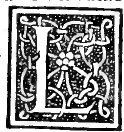

Chapter XLIX: Disposition of the Exacedron or Cube: Regular, Truncated, and Elevated¶
On the Disposition of the Exacedron or Cube: Regular (Plates VII–VIII), Truncated (Plates IX–X), and Elevated (Plates XI–XII).

Following the same threefold order—regular, truncated (absciso), and elevated (elevato), each in solid (solido) and hollow (vacuo) perspective—we now describe the second regular body, the exacedron or cube, and its immediate dependents (Plates VII–XII).
1. The Regular Exacedron or Cube — Solid (Plate VII) and Hollow (Plate VIII)
Plate VII (Folio 0199, Exacedron Planum Solidu[m]) and Plate VIII (Folio 0201, Exacedron Planum Vacuum): This is the second regular body, the cube (cubo or exacedron), whose construction in the sphere we proved in Chapter XXVII ([XIII.15]). It has 6 equal square bases (faces), 8 solid angles (each contained by 3 right angles), and 12 equal edges. Plate VII shows it solid, and Plate VIII shows it hollow in perspective.
2. The Truncated Cube (Exacedron Abscisum / Cuboctahedron) — Solid (Plate IX) and Hollow (Plate X)
Plate IX (Folio 0203, Exacedron Abscisum Solidu[m]) and Plate X (Folio 0205, Exacedron Abscisum Vacuum): This dependent body is formed from the cube by bisecting all 12 edges of the cube at their midpoints and slicing off all 8 corner pyramids by plane cuts passing through the midpoints of the three edges meeting at each corner:
In place of the 8 sliced-off solid angles of the cube, there arise 8 equilateral triangles (whose sides equal half the face diagonal of the cube).
Each of the 6 original square faces of the cube, having its four corners cut off to the midpoints of its four sides, is reduced to an inscribed square (whose area is half the original square face and whose sides equal the sides of the 8 new equilateral triangles!).
Thus the exacedron absciso (the cuboctahedron) is bounded by 14 plane bases in all—6 squares and 8 equilateral triangles—all having equal edges! It has 12 solid angles (at the 12 midpoints of the original cube’s edges, each vertex surrounded by two squares and two equilateral triangles) and 24 equal edges.
3. The Elevated Cube (Exacedron Elevatum) — Solid (Plate XI) and Hollow (Plate XII)
Plate XI (Folio 0207, Exacedron Elevatum Solidu[m]) and Plate XII (Folio 0209, Exacedron Elevatum Vacuum): This body is formed by erecting upon each of the 6 square bases of the core cube an equilateral square pyramid (each bounded by 4 equilateral triangles meeting at an outer apex or cone):
Externally it is bounded by \(6 \times 4 =\) 24 equilateral triangular faces (while the 6 square faces of the interior cube are enclosed within, visible in the hollow skeletal perspective of Plate XII).
It has 14 vertices in all (8 interior re-entrant vertices of the core cube and 6 exterior projecting cones of the six pyramids) and 36 equal edges (the 12 edges of the core cube plus \(6 \times 4 = 24\) rising edges).